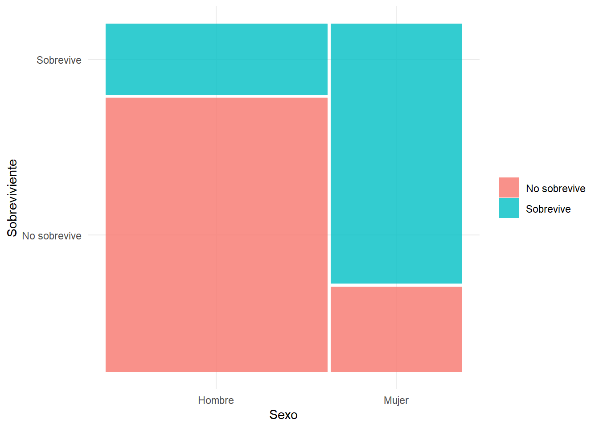
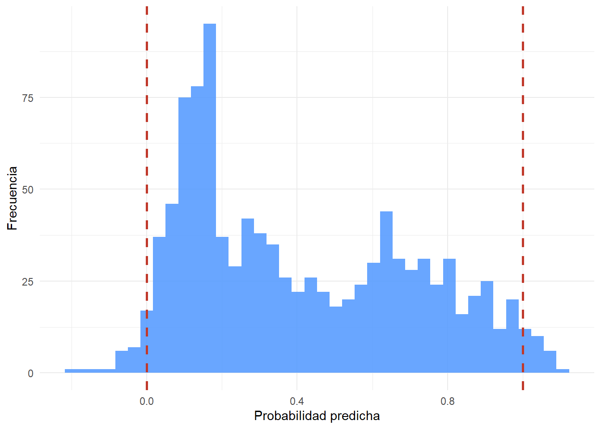

pacman::p_load(dplyr,
sjmisc,
sjPlot,
summarytools,
ggmosaic,
kableExtra,
ggplot2,
haven)Práctico 08. Regresión logística I: probabilidades, odds y odds ratio
Métodos estadísticos para Ciencias Sociales III
1 Presentación
1.1 Objetivo de la práctica
Con esta guía comenzamos la segunda parte del curso. Hasta ahora, todas nuestras variables dependientes fueron continuas. A partir de aquí trabajaremos con variables dependientes categóricas dicotómicas, es decir, que solo admiten dos valores: ocurre o no ocurre, vota o no vota, aprueba o reprueba.
El modelo que permite ese tipo de análisis es la regresión logística. Antes de estimarlo, necesitamos comprender tres conceptos que son su base: probabilidades, chances (u odds) y razón de chances (u odds ratio).
Esta guía es deliberadamente introductoria y se concentra en esos tres conceptos, que calcularemos a mano a partir de tablas de contingencia. La estimación del modelo mediante glm, la interpretación de sus coeficientes y la evaluación de su ajuste corresponden a la sesión teórica de esta tarde y al próximo práctico.
Al terminar, usted debería ser capaz de:
- Explicar por qué el modelo de regresión lineal no sirve para una variable dependiente dicotómica
- Calcular e interpretar una probabilidad a partir de una tabla de frecuencias
- Calcular e interpretar un odd, y distinguirlo de una probabilidad
- Calcular e interpretar un odds ratio como medida de asociación
- Comprender por qué los odds se transforman en logit
2 Librerías
rm(list = ls())
options(scipen = 999)
st_options(bootstrap.css = FALSE,
plain.ascii = FALSE,
style = "rmarkdown",
dfSummary.silent = TRUE,
footnote = NA,
subtitle.emphasis = FALSE)3 ¿Por qué no basta con la regresión lineal?
Antes de introducir conceptos nuevos, conviene entender qué problema estamos resolviendo.
Supongamos que codificamos nuestra variable dependiente como 0 y 1, y estimamos un modelo lineal corriente. El valor predicho de ese modelo se interpretaría como la probabilidad de que ocurra el evento, que por definición debe estar entre 0 y 1.
El problema es que nada en el modelo lineal garantiza ese límite. Lo veremos con datos concretos más adelante en esta guía.
NotaLa intuición
Una recta no tiene techo ni piso: crece o decrece indefinidamente. Una probabilidad, en cambio, está acotada entre 0 y 1, y además debe “aplanarse” cerca de esos extremos: si alguien ya tiene 95% de probabilidad de sobrevivir, una característica adicional favorable no puede sumarle otro 20%.
La regresión logística resuelve ese problema transformando la escala en la que se modela el fenómeno. Esa transformación es lo que construiremos paso a paso.
4 Los datos
El Titanic fue un transatlántico británico, el mayor barco del mundo al finalizar su construcción, que se hundió en la madrugada del 15 de abril de 1912 durante su viaje inaugural desde Southampton a Nueva York. En el hundimiento murieron 619 personas de las 1046 que iban a bordo, lo que lo convierte en uno de los mayores naufragios ocurridos en tiempo de paz.
Usaremos esta base para determinar las chances de sobrevivir según el sexo de los tripulantes. Es un ejemplo clásico para introducir estos conceptos, porque la asociación entre ambas variables es muy marcada y por tanto fácil de seguir.
load(url("https://github.com/Kevin-carrasco/metod3-unab/raw/refs/heads/main/practicos/data/titanic.Rdata"))4.1 Explorar los datos
print(dfSummary(tt, headings = FALSE), method = "render")| No | Variable | Stats / Values | Freqs (% of Valid) | Graph | Valid | Missing | ||||||||||||||||||||||||||||||||||||||||||||||
|---|---|---|---|---|---|---|---|---|---|---|---|---|---|---|---|---|---|---|---|---|---|---|---|---|---|---|---|---|---|---|---|---|---|---|---|---|---|---|---|---|---|---|---|---|---|---|---|---|---|---|---|---|
| 1 | pclass [factor] |
|
|
 |
1046 (100.0%) | 0 (0.0%) | ||||||||||||||||||||||||||||||||||||||||||||||
| 2 | survived [factor] |
|
|
 |
1046 (100.0%) | 0 (0.0%) | ||||||||||||||||||||||||||||||||||||||||||||||
| 3 | sex [factor] |
|
|
 |
1046 (100.0%) | 0 (0.0%) | ||||||||||||||||||||||||||||||||||||||||||||||
| 4 | age [numeric] |
|
98 distinct values |  |
1046 (100.0%) | 0 (0.0%) | ||||||||||||||||||||||||||||||||||||||||||||||
| 5 | sibsp [numeric] |
|
|
 |
1046 (100.0%) | 0 (0.0%) | ||||||||||||||||||||||||||||||||||||||||||||||
| 6 | parch [numeric] |
|
|
 |
1046 (100.0%) | 0 (0.0%) |
Nos centraremos en las variables sex y survived. Ambas tienen dos categorías, es decir, son variables dicotómicas.
4.2 Tabla de contingencia
Con la función ctable del paquete summarytools obtenemos la proporción de sobrevivientes según sexo:
ctable(tt$sex, tt$survived)Cross-Tabulation, Row Proportions
sex * survivedData Frame: tt
| survived | ||||||||||||
|---|---|---|---|---|---|---|---|---|---|---|---|---|
| sex | No sobrevive | Sobrevive | Total | |||||||||
| Hombre | 523 | ( | 79.5% | ) | 135 | ( | 20.5% | ) | 658 | ( | 100.0% | ) |
| Mujer | 96 | ( | 24.7% | ) | 292 | ( | 75.3% | ) | 388 | ( | 100.0% | ) |
| Total | 619 | ( | 59.2% | ) | 427 | ( | 40.8% | ) | 1046 | ( | 100.0% | ) |
La tabla muestra que la mayoría de los tripulantes no sobrevivió: 619 personas, un 59,2%, frente a 427 que sí sobrevivieron, un 40,8%. Al desagregar por sexo, solo un 20,5% de los hombres sobrevive, en contraste con un 75,3% de las mujeres.
4.3 Visualización
El paquete ggmosaic, con su función geom_mosaic, permite construir visualizaciones para datos categóricos. El mosaico completo corresponde al total de tripulantes. Como hay más hombres que mujeres a bordo, la columna de hombres es más ancha. El argumento fill distingue, dentro de cada sexo, la proporción de quienes sobrevivieron y quienes no sobrevivieron.
ggplot(data = tt) +
geom_mosaic(aes(product(survived, sex), fill = survived)) +
labs(y = "Sobreviviente", x = "Sexo", fill = NULL) +
theme_minimal()
5 Conceptos centrales
5.1 Probabilidades
Una probabilidad es la posibilidad de ocurrencia de un evento de interés, usando como referencia todos los eventos posibles. La probabilidad de “ser sobreviviente del Titanic” se calcula, entonces, en relación con el total de tripulantes.
Del total de pasajeros, un 40,8% sobrevive, es decir, la probabilidad de sobrevivir es de 0,408:
\[P_{sobrevivir} = \frac{427}{1046} = 0.408\]
Mientras que un 59,2% no sobrevive:
\[P_{no\ sobrevivir} = \frac{619}{1046} = 0.592\]
En R se obtiene con la función prop.table:
prop.table(table(tt$survived))
No sobrevive Sobrevive
0.5917782 0.4082218
NotaPropiedades de una probabilidad
- Varía siempre entre 0 y 1
- La probabilidad del evento y la de su complemento suman 1
- Se expresa habitualmente en porcentaje
5.2 Odds
Una forma alternativa de representar una probabilidad son las chances u odds, que se definen como la división entre el número de ocurrencias (\(\pi\)) y el número de “no ocurrencias” (\(1-\pi\)):
\[Odds = \frac{\pi}{1-\pi}\]
Siguiendo el ejemplo del Titanic:
\[Odds = \frac{Sobrevivientes}{No\ sobrevivientes}\]
La función addmargins entrega las frecuencias absolutas y marginales por filas y columnas:
addmargins(table(tt$survived, tt$sex))
Hombre Mujer Sum
No sobrevive 523 96 619
Sobrevive 135 292 427
Sum 658 388 1046\[Odds = \frac{427}{619} = 0.69\]
El resultado es 0,69, es decir, hay 0,69 sobrevivientes por cada no sobreviviente. Aunque parezca poco intuitivo hablar de 0,69 personas, lo que indica es que la relación entre sobrevivientes y no sobrevivientes no es 1 a 1, y que de hecho existen más chances de morir que de sobrevivir.
Otra forma de leerlo: por cada 100 no sobrevivientes, hay 69 sobrevivientes.
5.2.1 Odds por grupo
También podemos calcular los odds de sobrevivencia separadamente para hombres y mujeres:
\[Odds_{hombres} = \frac{135}{523} = 0.258\]
\[Odds_{mujeres} = \frac{292}{96} = 3.042\]
Para los hombres hay más chances de no sobrevivir que de sobrevivir, ya que el odds es menor que 1. Para las mujeres ocurre lo contrario.
ImportantePropiedades de los odds
- Odds menores que 1 indican que el evento es menos probable que su complemento
- Odds mayores que 1 indican que el evento es más probable que su complemento
- Un odds igual a 1 indica que ambos resultados son igualmente probables
- A diferencia de una probabilidad, un odds no tiene techo: varía entre 0 e infinito
En R podemos obtener las probabilidades marginales por sexo con prop.table. El número 2 indica que las proporciones se calculan por columna, es decir, tomando como total cada sexo:
prop.table(table(tt$survived, tt$sex), 2)
Hombre Mujer
No sobrevive 0.7948328 0.2474227
Sobrevive 0.2051672 0.7525773A partir de esas proporciones también se puede llegar al odds. Para los hombres, 0,205 dividido por 0,795 entrega 0,258, el mismo valor calculado con las frecuencias.
0.205 / 0.795[1] 0.2578616
NotaProbabilidad y odds no son lo mismo
La probabilidad de que una mujer sobreviva es 0,753. Su odds de sobrevivir es 3,042. Ambos describen el mismo hecho, pero en escalas distintas: la probabilidad compara los sobrevivientes con el total, y el odds los compara con los no sobrevivientes.
5.3 Odds ratio
Con lo anterior podríamos concluir que las mujeres tienen más chances de sobrevivir que los hombres. Pero queda pendiente una pregunta: ¿cuánto más?
Esa pregunta ya no se refiere a cada grupo por separado, sino a la asociación entre sobrevivencia y sexo. Para responderla se calcula la razón de chances u odds ratio:
\[OR = \frac{Odds_{mujeres}}{Odds_{hombres}} = \frac{3.042}{0.258} = 11.78\]
El resultado se lee así: las chances de sobrevivir de las mujeres son 11,78 veces las de los hombres.
odds_mujeres <- 292 / 96
odds_hombres <- 135 / 523
odds_mujeres / odds_hombres[1] 11.783645.3.1 Cómo se interpreta
ImportantePropiedades del odds ratio
- \(OR = 1\): no hay asociación, ambos grupos tienen las mismas chances
- \(OR > 1\): el primer grupo tiene más chances que el de referencia
- \(OR < 1\): el primer grupo tiene menos chances que el de referencia
Note que el odds ratio depende de cuál grupo se ponga en el numerador. Si invertimos la comparación:
odds_hombres / odds_mujeres[1] 0.08486341Las chances de sobrevivir de los hombres son 0,085 veces las de las mujeres, que es exactamente \(1/11{,}78\). Se trata del mismo hallazgo expresado al revés, igual que ocurría con la categoría de referencia en las variables dummy.
5.3.2 ¿Qué ganamos con el odds ratio?
El OR permite expresar en un solo número la relación entre dos variables categóricas. En ese sentido, cumple una función análoga a la del coeficiente \(\beta\) en la regresión lineal, y es lo que nos permitirá aprovechar las ventajas del modelo de regresión, en particular el control estadístico, cuando la variable dependiente es categórica.
5.4 Del odds al logit
Los odds resuelven buena parte del problema, pero tienen una limitación que impide usarlos directamente en un modelo de regresión: no son simétricos.
Observe los dos valores que calculamos:
c(hombres = odds_hombres, mujeres = odds_mujeres) hombres mujeres
0.2581262 3.0416667 Las mujeres tienen un odds de 3,04 y los hombres de 0,26. Si quisiéramos decir que una chance es “el doble de favorable” y otra “el doble de desfavorable”, los números no se comportan de manera equivalente: los odds favorables se extienden de 1 a infinito, mientras que los desfavorables quedan comprimidos entre 0 y 1.
La solución es aplicar el logaritmo natural:
log(c(hombres = odds_hombres, mujeres = odds_mujeres)) hombres mujeres
-1.354307 1.112406 Ahora los valores son simétricos en torno a cero: −1,36 y 1,11. Un valor negativo indica chances desfavorables, uno positivo chances favorables, y el cero indica ausencia de asociación.
\[logit(\pi) = \ln\left(\frac{\pi}{1-\pi}\right)\]
Esta transformación es el logaritmo de los odds, o logit, y de ahí proviene el nombre de la regresión logística. El modelo que veremos esta tarde estima, precisamente, una ecuación lineal sobre esta escala transformada.
NotaLas tres escalas
Un mismo fenómeno puede expresarse de tres formas:
| Escala | Rango | Ejemplo (mujeres) |
|---|---|---|
| Probabilidad | 0 a 1 | 0,753 |
| Odds | 0 a infinito | 3,042 |
| Logit | −infinito a +infinito | 1,113 |
El modelo trabaja en la tercera porque es la única no acotada, y por tanto la única compatible con una ecuación lineal. La interpretación, en cambio, suele hacerse volviendo a las dos primeras.
6 Una demostración del problema
Volvamos a la pregunta del comienzo. ¿Qué ocurre si, en lugar de todo esto, simplemente estimamos un modelo lineal sobre la variable dicotómica?
Recodificamos la sobrevivencia como 0 y 1, y estimamos un modelo lineal corriente:
tt_lm <- tt %>%
filter(!is.na(age)) %>%
mutate(sobrevive = ifelse(survived == "Sobrevive", 1, 0))
modelo_lineal <- lm(sobrevive ~ sex + age + pclass + sibsp + parch,
data = tt_lm)Si el modelo fuese adecuado, cada valor predicho debería ser una probabilidad, y por lo tanto situarse entre 0 y 1. Veamos:
summary(fitted.values(modelo_lineal)) Min. 1st Qu. Median Mean 3rd Qu. Max.
-0.1909 0.1462 0.3267 0.4082 0.6638 1.1167 El valor mínimo es negativo y el máximo supera 1. Contemos cuántos casos quedan fuera del rango posible:
predichos <- fitted.values(modelo_lineal)
sum(predichos < 0 | predichos > 1)[1] 46data.frame(predichos = predichos) %>%
ggplot(aes(x = predichos)) +
geom_histogram(bins = 40, fill = "#4f97ff", alpha = 0.85) +
geom_vline(xintercept = c(0, 1), color = "#c0392b",
linetype = "dashed", linewidth = 1) +
labs(x = "Probabilidad predicha", y = "Frecuencia") +
theme_minimal()
ImportanteEl problema, en concreto
Decenas de casos reciben una probabilidad predicha negativa o superior a 1. Son valores imposibles: no existe una probabilidad de −0,19 ni de 1,12.
Y no se trata de una extrapolación hacia valores absurdos de las variables independientes: son personas que efectivamente iban a bordo. El modelo lineal, aplicado a una variable dicotómica, produce predicciones que no pueden interpretarse.
7 Aplicación con datos de ELSOC
Trabajemos ahora los mismos conceptos con la base del curso, donde las asociaciones son bastante más modestas que en el Titanic.
7.1 Preparación
load(url("https://github.com/Kevin-carrasco/metod3-unab/raw/refs/heads/main/files/data/elsoc16-22.RData"))proc_data <- elsoc_long_2016_2022.2 %>%
filter(ola == 1) %>%
select(t01, m01, m0_sexo, m0_edad) %>%
set_na(., na = c(-999, -888, -777, -666)) %>%
rename("confianza" = t01,
"educacion" = m01,
"sexo" = m0_sexo,
"edad" = m0_edad) %>%
na.omit()
nrow(proc_data)[1] 29067.2 Construir una variable dicotómica
La confianza en los vecinos se mide en una escala de 1 a 5. Para este ejercicio la convertiremos en una variable dicotómica: confía quien responde 4 o 5, y no confía quien responde 1, 2 o 3.
frq(proc_data$confianza)x <numeric>
# total N=2906 valid N=2906 mean=3.20 sd=1.20
Value | N | Raw % | Valid % | Cum. %
--------------------------------------
1 | 332 | 11.42 | 11.42 | 11.42
2 | 502 | 17.27 | 17.27 | 28.70
3 | 711 | 24.47 | 24.47 | 53.17
4 | 987 | 33.96 | 33.96 | 87.13
5 | 374 | 12.87 | 12.87 | 100.00
<NA> | 0 | 0.00 | <NA> | <NA>proc_data <- proc_data %>%
mutate(confia = ifelse(confianza >= 4, 1, 0),
confia = factor(confia,
levels = c(0, 1),
labels = c("No confía", "Confía")),
sexo_f = as_factor(sexo))
frq(proc_data$confia)x <categorical>
# total N=2906 valid N=2906 mean=1.47 sd=0.50
Value | N | Raw % | Valid % | Cum. %
-------------------------------------------
No confía | 1545 | 53.17 | 53.17 | 53.17
Confía | 1361 | 46.83 | 46.83 | 100.00
<NA> | 0 | 0.00 | <NA> | <NA>
AdvertenciaDicotomizar tiene un costo
Al convertir una variable de cinco categorías en una de dos, perdemos información: alguien que responde 1 y alguien que responde 3 quedan en el mismo grupo, aunque sus respuestas sean distintas.
Lo hacemos aquí porque necesitamos una variable dicotómica para trabajar estos conceptos. En una investigación, el punto de corte debe justificarse teóricamente, y siempre conviene revisar si los resultados cambian al moverlo.
7.3 Probabilidades y odds
Cross-Tabulation, Row Proportions
sexo_f * confiaData Frame: proc_data
| confia | ||||||||||||
|---|---|---|---|---|---|---|---|---|---|---|---|---|
| sexo_f | No confía | Confía | Total | |||||||||
| 1 | 598 | ( | 51.6% | ) | 560 | ( | 48.4% | ) | 1158 | ( | 100.0% | ) |
| 2 | 947 | ( | 54.2% | ) | 801 | ( | 45.8% | ) | 1748 | ( | 100.0% | ) |
| Total | 1545 | ( | 53.2% | ) | 1361 | ( | 46.8% | ) | 2906 | ( | 100.0% | ) |
addmargins(table(proc_data$confia, proc_data$sexo_f))
1 2 Sum
No confía 598 947 1545
Confía 560 801 1361
Sum 1158 1748 29067.3.1 Ejercicio guiado
A partir de la tabla anterior, calcule:
- La probabilidad de confiar en los vecinos para el total de la muestra
- El odds de confiar para los hombres
- El odds de confiar para las mujeres
- El odds ratio entre ambos grupos
Ver solución
tabla <- table(proc_data$confia, proc_data$sexo_f)
# 1. Probabilidad total de confiar
prop.table(table(proc_data$confia))
No confía Confía
0.5316586 0.4683414 Ver solución
# 2 y 3. Odds por sexo
odds_h <- tabla["Confía", 1] / tabla["No confía", 1]
odds_m <- tabla["Confía", 2] / tabla["No confía", 2]
c(hombres = odds_h, mujeres = odds_m) hombres mujeres
0.9364548 0.8458289 Ver solución
# 4. Odds ratio
odds_m / odds_h[1] 0.9032245Ambos odds son cercanos a 1, lo que indica que en los dos grupos las chances de confiar y de no confiar son parecidas. El odds ratio también resulta próximo a 1, de modo que la asociación entre sexo y confianza vecinal es débil.
NotaUna lección del contraste
En el Titanic obtuvimos un OR de 11,78. Aquí obtenemos uno cercano a 0,9. La diferencia no es un error: la mayoría de las asociaciones en investigación social son modestas, y el Titanic es excepcional precisamente porque la evacuación siguió una regla explícita de prioridad.
Al igual que con el \(R^2\), un valor pequeño no invalida el análisis. Lo que sí exige es prudencia al redactar la interpretación.
7.4 Con una variable de tres categorías
Recodifiquemos el nivel educacional y repitamos el ejercicio:
proc_data <- proc_data %>%
mutate(educ_rec = case_when(educacion <= 3 ~ 1,
educacion <= 5 ~ 2,
TRUE ~ 3),
educ_f = factor(educ_rec,
levels = c(1, 2, 3),
labels = c("Educación básica",
"Educación media",
"Educación superior")))
table(proc_data$confia, proc_data$educ_f)
Educación básica Educación media Educación superior
No confía 371 676 498
Confía 282 565 514tabla_educ <- table(proc_data$confia, proc_data$educ_f)
odds_educ <- tabla_educ["Confía", ] / tabla_educ["No confía", ]
round(odds_educ, 3) Educación básica Educación media Educación superior
0.760 0.836 1.032 Los odds aumentan de manera sostenida con el nivel educacional. Calculemos ahora los odds ratio tomando la educación básica como categoría de referencia:
round(odds_educ / odds_educ["Educación básica"], 3) Educación básica Educación media Educación superior
1.000 1.100 1.358 Quienes tienen educación superior presentan chances de confiar en sus vecinos aproximadamente 1,36 veces mayores que quienes tienen educación básica.
NotaLa conexión con la sesión pasada
Note la similitud con las variables dummy: hay una categoría de referencia, y cada coeficiente se interpreta respecto de ella. Esa es exactamente la lógica que seguirá el modelo de regresión logística.
8 Lo que viene
Hasta aquí calculamos todo a mano, a partir de tablas de contingencia. Ese trabajo no se pierde: es exactamente lo que estima un modelo de regresión logística, solo que de manera automática y permitiendo incorporar varias variables independientes a la vez.
Lo que aún no podemos hacer con tablas de contingencia es controlar estadísticamente. Si quisiéramos saber si la asociación entre educación y confianza se mantiene una vez considerada la edad, necesitaríamos un modelo.
Ese es el contenido de la sesión teórica de esta tarde y del próximo práctico:
- La estimación mediante
glm - La interpretación de los coeficientes logit y su conversión a odds ratio
- El cálculo de probabilidades predichas
- La evaluación del ajuste del modelo
9 Ejercicios
9.1 Conceptos
Explique con sus palabras la diferencia entre una probabilidad y un odds. Utilice como ejemplo un grupo de la base del Titanic.
Un odds ratio de 0,45, ¿indica una asociación positiva o negativa? ¿Cómo se expresaría ese mismo resultado invirtiendo la comparación?
¿Por qué un modelo de regresión lineal no resulta adecuado cuando la variable dependiente es dicotómica? Mencione al menos dos razones.
9.2 Cálculo con el Titanic
Construya la tabla de contingencia entre
pclassysurvived.Calcule la probabilidad de sobrevivir para cada una de las tres clases.
Calcule el odds de sobrevivir para cada clase.
Calcule el odds ratio tomando la clase baja como categoría de referencia, e interprete los dos valores obtenidos.
Calcule el logit correspondiente a cada clase y comente qué ocurre con el signo.
9.3 Cálculo con ELSOC
Cargue la base ELSOC y filtre por la ola 4 (2019). Construya una variable dicotómica a partir de la confianza en los vecinos, usando el mismo punto de corte de esta guía.
Elabore la tabla de contingencia entre esa variable y el nivel educacional recodificado en tres categorías.
Calcule los odds por grupo y los odds ratio respecto de la educación básica.
Compare los resultados con los obtenidos para 2016 en esta guía y comente brevemente si el patrón se mantiene.
9.4 Reflexión
- Elija un fenómeno social que podría estudiarse con una variable dependiente dicotómica, señale cuál sería esa variable y qué dos predictores le parecen teóricamente relevantes. Anticipe el signo que esperaría para cada uno.